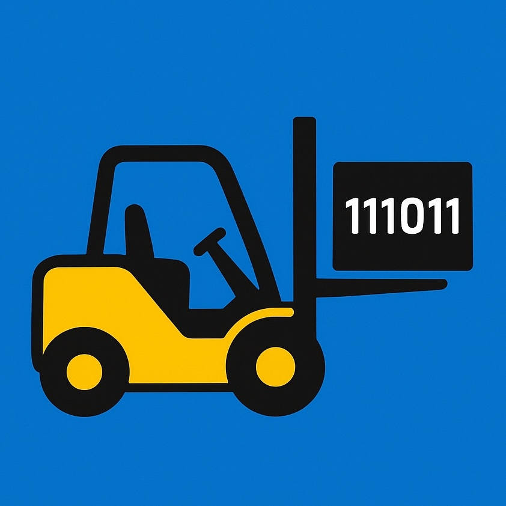
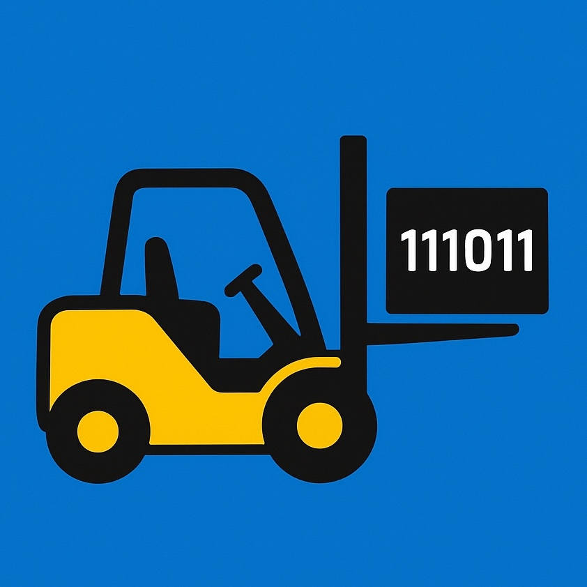

Age is just a data type. Let's build something.
Hi, I'm Chris, and I'm a 59-year-old forklift driver learning to code from scratch. This site isn't a portfolio of finished work—it's a living journal of the messy, real process. I’m starting with Dart and Flutter because I finally decided that old idea in my head deserved to be built. Whether you’re a beginner feeling overwhelmed or a veteran looking for a fresh perspective, pull up a seat. There are no stupid questions here.
Forks Down, Code Up. See the Journey on YouTube.